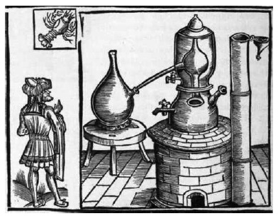

ŞEKİL 90. H. Brunschwig’in Liber de arte distillandi adlı kitabının Almanca çevirisi olan Das Buch der waren Kunst zu distillieren die Composita vnd Simplica (Strasbourg, 1507) adlı eserden damıtma aygıtı.141
Damıtık yağlar ve kullanımı üzerine 8. ve 9. yüzyıldan kimi bilgiler bulunmaktadır. 9. yüzyılda Bağdat, gülsuyu konusunda büyük bir pazar durumundaydı ve üretilen gülsuyu ilaç olarak Hindistan, Çin, Afrika ve İspanya’ya satılıyordu. Gülsuyu yetiştiriciliği ünlü olan İran’ın Şiraz yöresinden, yılda yaklaşık 5 bin şişe gülyağı, haraç olarak Bağdat’a gönderilmekteydi. 11. yüzyılda Şam’da yaşayan Suriye’li hekim Serapion ve ondan yaklaşık yüz yıl sonra yaşayan, Halife Abdülmümin’in (yön. 1128-1163) özel hekimi İbn Zühr, göz ilacı olarak gülsuyundan yararlanmışlardı. Arap hekimi Ebu Cafer Ahmed, gülyağını ve alışılmış kâfuru, genel kullanımlı ilaçlardan saymıştır. Buna göre kâfur, kullanılan ilk “saf” uçucu yağdır. El-Kindî’nin parfümle ilgili eserinden okunabileceği üzere kâfur, süblimleştirme ile çok saf olarak ele geçirilebiliyordu. Ayrıca uçucu yağların (Ar. “zeyt-i tayyar”), giysi üzerine sürüldüğünde, ilkin leke bırakmış gibi göründüğü, ama beklendiğinde zamanla uçup gittiği ve geride hiçbir şey kalmadığı; uçucu yağın üzerinde, uçucu olmayan bileşenlerin yapışıp kalmadığı belirtiliyordu.141
10. yüzyılda Ebu Abdullah ibn Ahmed el-Temîmî (ölm. 994), Gelinin Göğsü ve Ruhların Parfümü [Almanca’da: Der Busen der Braut und das Parfüm der Seelen] adlı eseri ün kazanmıştır.150 Ortaçağ Araplarında gül esansı, ağırlığınca yakut değerindeydi ve deve kervanlarıyla dere-tepe demeden doğuda Kâbil’e, batıda Şam’a ve Aden’e dek taşınırdı.
Suriye’de Trablusşam’da doğmuş olan Şihabeddin el-Nüveyrî (1279-1332) Nihâyet el-Erab fî Fünun el-Adâb (Edebî Bilgiler Konusunda İnsan Aklının Son Buluşları) adlı eserinde taze halde kokulu olan ve damıtmaya tâbi tutulan bitkiler (gül, nilüfer, ban ağacı vb.), taze halde kokulu olan ve damıtılmayan bitkiler (menekşe, nergis, yasemin, mersin ağacı, safran, reyhan vb.), çeşitli reçineler (kâfur, sakız çeşitleri, terementi reçinesi, günlük, sütleğen reçinesi, sarısabır reçinesi, mür, enginar reçinesi, kasnı, şeytantersi, kardeşkanı, aselbent, arapsakızı, katran, zift vb.), manna (kudret helvası) çeşitleri üzerine, ayrıca da parfümler (misk, amber, sarısabır, hintsümbülü, kuru karanfilden yapılanlar), tütsüler, yağlar, sulu müstahzarlar (gülsuyu, elma suyu vb.) konusunda bilgiler vermektedir.171 Kudret helvası, gezengevi ya da gezengüve adlarıyla da bilinen manna, ılgın ağacının ve “Quercus libani” (Lübnan meşesi) türü meşe ağaçlarının yaprakları üzerinde oluşarak sıcak yaz aylarında rüzgârlı günlerde beyaz toz halinde yapraklarda sızan ya da “Fraxinus ornus“ bitkisinin gövdesinin çizilmesiyle elde edilen koyu kıvamlı, helvamsı doğal bir maddedir. Halk arasında müshil, besleyici ve yumuşatıcı olarak kullanılır. Söylencesel olarak İsrailoğulları’nın Mısır’dan çıkışında onların kutsal yiyeceği olmuştur. Güneydoğu Anadolu köylerinde kudret helvası kurutulur, beyaz bir bezin içinde dövülür ve topak haline getirilerek satılır ya da su ile kaynatılarak pekmezi yapılır. Ayrıca kudret helvasından Kürt baklavası denen bir cins tatlı da yapılır.57, 172
Gülyağı elde edilişine ilişkin ilk bilgilere Ortaçağ’da Dioskorides’in yazılarında rastlanmaktadır. Gülyağı Ortaçağ boyunca “oleum rosarum”, “oleum rosatum” gibi adlar altında kullanılmıştır. Gülün damıtılması ve damıtık gülyağının kullanılması konusunda ilk açık bilgileri Arap tarihçisi Abdurrahman ibn Haldun (1332-1406) vermektedir. Buna göre gülsuyu 8. ve 9. yüzyıllarda Çin ve Hindistan’a dek ulaşan önemli bir ticarî madde idi. 12. yüzyıl başlarında gülsuyunun göz ilacı, gülyağı şekerinin ise iç hastalıklarında ilaç olarak kullanıldığı görülmektedir. O çağlarda İran, gülsuyu üretiminde önde gidiyordu.8 Gülsuyunu Avrupa’ya tanıtanlar, Araplar olmuştur. Gül bitkisinin birçok türleri arasında Şam gülü’nün (Lat. “Rosa damascena”, Fra. “rosier de Damas”) çiçek yapraklarında diğer türlerden daha bol miktarda bulunan ve çok kokulu olan gülyağı, daha çok bu gül türünden elde edilir.
Çok sayıda gül türü arasında en değerli eterik çiçek yağını vereni, olasılıkla Şam kökenli “Rosa damascena Mill.”dir. El-Kindî’nin anılan eserinde su buharı damıtmasıyla gülyağı elde edilmesi betimlenmektedir. Fas’ta bugün bile Mağripliler eski geleneğe göre “Rosa centifolia L.”nin çiçeklerinden gülsuyu elde etmektedir. “Tarihin babası” diye nitelenen Herodotos, bu gül türünü, alışılmışın dışındaki kokusu nedeniyle övmüştür. Zengin kokulu “Pelargonium (Geraniaceae)” sardunya sınıfı, çok sayıdaki doğal ve yapay melezi (hibrit) ile yaklaşık 150 yıldan beri bu eterik yağın endüstriyel üretiminde kullanılmak üzere yetiştirilmektedir. Mağripliler, İran’ın gül damıtma tekniğini 10. yüzyılda Endülüs’e taşımışlar ve her yere kurdukları sulama sistemiyle çiçek bahçelerinde çeşitli gül türleri yetiştirmişlerdir. 141 Söylenceye göre gülyağı elde etmek için bir yöntem, Hint-Moğol İmparatoru Cihangir’in (yön. 1605-1627) yeni evlendiği karısı tarafından keşfedilmiştir. O, sarayın gül bahçesinde gül yapraklarının döküldüğü kanal suyunun yüzeyinde biriken “yağ” birikintilerini toplatmış ve onun tarafından “Atr-i Cihangirî” (Cihangir’in ıtırı) diye adlandırılmıştır.163
Araplar ilaç ve çok beğendikleri güzel kokulu sıvılar elde etmeye yönelik olarak damıtma yoluyla kazanılan madde türünü artırdılar. En önemli parfüm, gülyağı idi ve üretimi 8. yüzyılda geniş boyutlara ulaştı. Bu amaçla gül yaprakları suda yumuşatılıyor, daha sonra da damıtılıyordu. Çok sayıda damıtma balonunu aynı anda ısıtabilmek için özel ocaklar inşa ettiler. Bu kurgulamanın nedeni, o zamanlar daha büyük damıtma balonlarının henüz üretilememesiydi. Gülyağının yanı sıra terementi yağı da damıtmayla benzer şekilde elde ediliyordu. Terementi yağı, renksiz ve akıcı bir yağ olup reçine ve lâkları çözmeye yarar ve çeşitli iğne yapraklı ağaçların ya da terementi fıstığının reçinesinden elde edilir.
Ortaçağda 900’lerde şarabın damıtılmasıyla yeni keşfedilen etil alkol, kokulu suların hazırlanması sürecinde çözücü olarak kullanılmaya başlanmış ve böylelikle de özütleme verimi ve üründe birörneklik gelişmiştir.
Evliya Çelebi’nin bildirdiğine göre İstanbul’da inşa edilen yeni camiler, sayısız kandil ve şamdanla donatılmıştı ve saray imalatı mumlar üretilirken kâfur ile kokulandırıldığından, bunlar yanarken kâfur kokusu yayıyorlardı. Osmanlı’da koku kültürü gelişmişti, Çarşılarda çok miktarda buhurdan satılıyor, ayrıca gülabdanlar da yaygın olarak kullanılıyordu. Yüksek tabakadan insanlar, kokulu su, uçucu yağ, buhur, misk ve amberi yaygın olarak kullanıyordu. 1600’lerde yapılmış tombak (yüzeyi altın kaplanmış bakır) bir buhurdanın kitabesinde, “Misk ve amber, zihni açar” anlamına gelen bir ibare yazılıdır.173 Camilerin yakın çevresinde, camekânlı küçük kutusu içindeki yasemin, sümbül, gül, reyhan, tefarik, sandal, ful, kakule, tarçın, karanfil gibi esans yağlarını ve güzel kokulu sıvıları bir şırınga yardımıyla müşterilerin giysisine, sakalına sıkan ya da onların esans şişelerine dolduran esans satıcılarına günümüzde de rastlanmaktadır.
Evliya Çelebi Seyahatnâme’sinde İstanbul’daki şenliklerde esnaf alayları geçidinde güzel koku esnafının halka yasemin, sümbül, gül ve reyhan yağları dağıttığından söz ederse de bunların damıtmayla elde edilmiş uçucu yağlar olmayıp bu bitkilerle kokulandırılmış sıvılar olduğu bilinmektedir. Evliya Çelebi, pazarda gülsuyu satan Edirneli hatunlardan da söz eder. C. A. Bernard tarafından 1844’te yayımlanan Pharmacopoea Castrensis Ottomana – Pharmacopée Militaire Ottoman adlı askerî kodekste uçucu yağ için Latince “oleum destillatum”, Fransızca “huile essentielle” ve Türkçe “yağ” (Osmanlıcası “ruh”) terimleri kullanılarak rezene yağı, ardıç yağı, nane yağı ve saf terementi yağı olmak üzere dört uçucu yağın elde edilişleri kayıtlıdır. 1894 Eczahaneler Nizamnâmesi listesinde 30 uçucu yağ kayıtlı iken, 1974 Türk Farmakopesi’nde ise yalnızca bir uçucu yağ (“Oleum anisi”: anason yağı) bulunmaktadır.174
Osmanlı’da saray başkimyageri Bonkowski Paşa, Mayıs 1886’da Maliye Nazırı Kazazyan Agop Paşa (1832-1891) tarafından gül esansı imalatını yürütmekle görevlendirilmiş ve İstanbul Kandilli yakınındaki Çavuşbaşı Çiftliği’ne (“ferme impériale”) giderek buradan alınan ilk gül rekoltesinde gül esansı çıkarılmasına nezaret etmiştir. Sultan II. Abdülhamid’in (yön. 1876-1909) emriyle gül bitkisini Anadolu iklimine alıştırmak ve büyük çapta gül esansı imalatını başlatmak üzere girişimlerde bulunulmuş, Bulgaristan’ın Kızanlık / Kazanlık yöresinden getirilen “Rosa damascena” türü binlerce gül fidanı, eskiden de esans imalatçısı olan ve 1877 Osmanlı-Rus Savaşı sıralarında Kızanlık’ı terk ederek Türkiye’ye gelen Doğu Rumeli’li Müslüman göçmenlerin yardımlarıyla Bursa civarına ve Kandilli yakınındaki Çavuşbaşı Çiftliği’ne ekilmişti. Bonkowski Paşa’nın bu konuda 1888’de yazdığı De la fabrication de l’essence de roses en Asie Mineure (Anadolu’da Gülyağı Üretimi Üzerine) adlı bir kitapçığı vardır. Osmanlılar, bahçelerinde çok eskiden beri yağ gülü yetiştirmekte ve bundan gül reçeli ve küçük çapta gül esansı imal etmekteydiler. Çavuşbaşı Çiftliği’ndeki imalat, İstanbul’da endüstriyel çapta gül esansı imali için ilk girişimdi. Bonkowski’ye göre, denemeler sonunda 10 okka (12,5 kg) gülden 1 miskal (4,67 g) esans ve 6 okka gülsuyu elde edilmiştir. Başarılı sonuçlar veren bu ilk girişimden sonra, gül esansı imalatının Osmanlı Devleti’nin diğer eyaletlerinde, özellikle de Anadolu’da yaygınlaştırılması gerektiği belirtilmiştir.175 Bu bağlamda yine 1892 yılında Müftüzade İsmail Efendi tarafından Rumeli’li göçmenler aracılığıyla Isparta ve Burdur’da başlatılan gülcülükte çok başarılı sonuçlar alınmıştır. 1910 yılında Aydın’da 300 kg gülyağı üretildiği belirtilmektedir. Osmanlı’da o dönemlerin gülsuyu ve gülyağı üretimini ele alan kimi eserlerde, Hindistan’da yetiştirilen “Andropogon” türü bitkiden elde edilen ve gülyağından çok daha ucuz olduğu için burada üretilen gülyağına katıştırılan (tağşiş) ya da doğrudan onun yerine kullanılan ve “ıtr-i şâhi” (bizde “idris yağı”) adı verilen gül kokulu bir yağdan (“geranium rosa” yağı; Alm. “Geraniöl / Geraniumöl”: ebegümeci çiçeği yağı) söz edilmektedir. Ancak şurasını belirtmek gerekir ki, “Rosa damascena”, ülkemize ilk kez Kızanlık’tan gelmiş değil, tam tersine, daha önce Türkler tarafından oraya götürülerek orada yetiştirilmiştir.174, 176
Buhur, çeşitli dinsel tören ve toplantılarda fena kokuları gidermek için özel bir kap (buhurdan) içinde yakılarak güzel kokulu dumanından yararlanılan bir tütsü idi. Yukarıya doğru yükselen dumanın etkisiyle yakarış ve dileklerin Tanrı’ya daha kolay ulaşacağı bir araç olarak düşünülüyor ve buhurun güzel kokusunun iyi ruhları ve iyilik meleklerini o mekâna davet edeceğine inanılıyordu. Sığla ağacının (günnük ya da günlük ağacı, “Liquidambar orientalis”) çeşitli işlemlerden geçirilerek kurutulmuş kabukları, halk arasında günlük ya da buhur diye anılmaktaydı. Evliya Çelebi, Marmaris yöresinde zengin yayılımını gördüğü sığla ağacı ve yağı konusunda şunları yazar: “Bu sığla yağı, kavak gibi küçük bir ağaçtan elde edilir. O memleket halkı eğri ve ucu sivri demir ile ağaçların kabuklarını kazırlar ve cenderelerde sıkarlar ve kabukları tulumlara doldurup yedi iklime gönderip buhur gibi yakarlar. Anberden güzel kokusu vardır. Yağı kırmızı bir yağdır. Mısır’a, oradan Süveyş yolu ile Hindistan’a gönderilir. Orada terbiye edip merhem gibi yüz ve burunlarına sürüp cüzam hastalığından kurtulurlar...”.174
Osmanlılarda misk, kitre, pelesenk ve ödağacı yağı, gülyağı ve kömür tozu ile yapılan buhurların saf amber kabuğu, amber, ardıç tohumu, günlük, sandal ağacı tozu gibi türleri vardı. Bakır, pirinç, tombak, ayrıca porselen, gümüş ve altından yapılan buhurdanların içine kül ve ateş konarak söz konusu maddeler yakılırdı.98
17. yüzyılda sakız, Sakız Adası (İstanköy Adası ya da Kos Adası) dışında dünyanın hiçbir yerinde üretilmiyor ve üretilen sakızın tamamı, vergi olarak Osmanlı sultanının haremine yollanıyordu. O dönemde İstanbul’a yılda ortalama 3000 kg sakız gönderiliyordu. İstanbul’da saraylı kadınlar arasında sabahtan akşama kadar sakız çiğnemek moda olmuştu. Böylelikle onlar dişlerini beyazlatıyor ve soluklarının güzel kokmasını sağlıyorlardı. Sakızağacı denilen ve şamfıstığı ağacına benzeyen bu değerli ağacı yetiştiren ada köylüleri, sarayca belirlenen miktarda sakızı, ücreti karşılığında teslim etmek zorundaydılar. Ağaçtan sakızı çıkarmak için kabuğu haç şeklinde çizilir ve sızan sakız sıvısı toplanırdı. Çiğnenerek tüketiminin dışında sakız likörü yapımında da kullanılırdı. 19. yüzyıl ikinci yarısında İstanbul’a gelen Edmondo de Amicis (1846-1908), Constantinopoli (İstanbul) (1877) adlı kitabında şöyle yazar: “Burada buselere hoş kokular veren saray şekerleri, kuvvetsiz Müslüman kadınların diş etlerini kuvvetlendirmek için Sakız Adası’nın güçlü kuvvetli kızlarının sakız ağacından çıkardıkları kokulu sakızlar, nefis bergamut ve yasemin özleri, sırma işlemeli kadife kılıflar içinde korunan ve fiyatı yüksek gül yağları bulunur. Kaşlara sürülen rastık, gözlere çekilen sürme, tırnaklara yakılan kına, güzel Suriyeli kadınların cildini yumuşatan sabunlar, biraz erkeğimsi Çerkes kadınlarının yüzlerindeki tüyleri yok etmek için kullandıkları ağda özleri, mis torbaları, sandal ağacı yağı, ak amber, fincanlarla çubukların güzel kokması için sarısabır, baştan çıkarma ve şehvet duygusu uyandırmak için kullanılan binlerce toz, sıvı ve merhem.”177